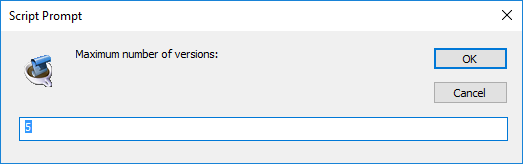
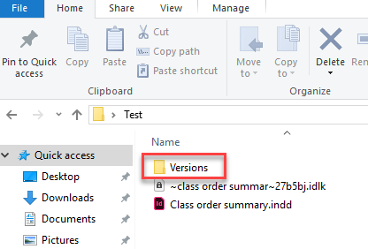
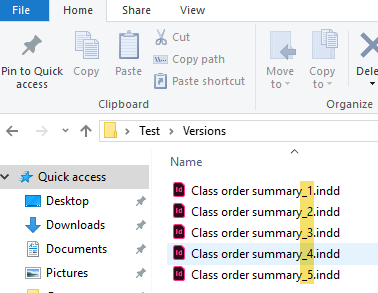

Save versions
Author: Martin Fischer. German to English translation by Kasyan. The source is here.
saveVersions.jsx does a "Save As Copy" in the background every time you "Save" or "Save As" of your document. The versions are saved to a folder named "Versions" just in the same folder where your original InDesign file resides. The versions are numbered (you'll be prompted for the max. number the first time you are using it). You can reset the maximum number with VersionsCounter.jsx.
It should work with every version of InDesign from CS3 and above. (I tested it in CC 2018 on Windows and it worked for me).
You have to put the Save versions script into the startup scripts folder of the InDesign's Scripts folder.
VersionsCounter.jsx should be installed as a regular script: in the Scripts Panel folder.
This event script does the following:
1. The second time you save a document (that is, before the first saved version is overwritten), you will be prompted to enter the maximum number of versions to manage (default is 5).

2. After confirming the dialog (be careful, it is persistent and expects a number > 0) a backup copy of the old version will be created in a subfolder of the folder in which the document is located called “Versions”. This backup copy is named “[documentname] _1.indd”.

3. Each time you save (only if something has changed in the document), the version number will increase until the maximum version number is reached; when the maximum version number is reached, the counter is reset to 1 and the numbering loop starts over again (first “[document name] _1.indd” is overwritten (!), next time “[document name] _2.indd”.

4. The undo history in the current document is retained.
The maximum number of versions that the saveVersions.jsx manages can be changed with the script VersionsCounter.jsx. The currently assigned value is shown in the input dialog as default.
Click here to download the saveVersions script.
See also Save with backup by Gregor Fellenz (grefel)